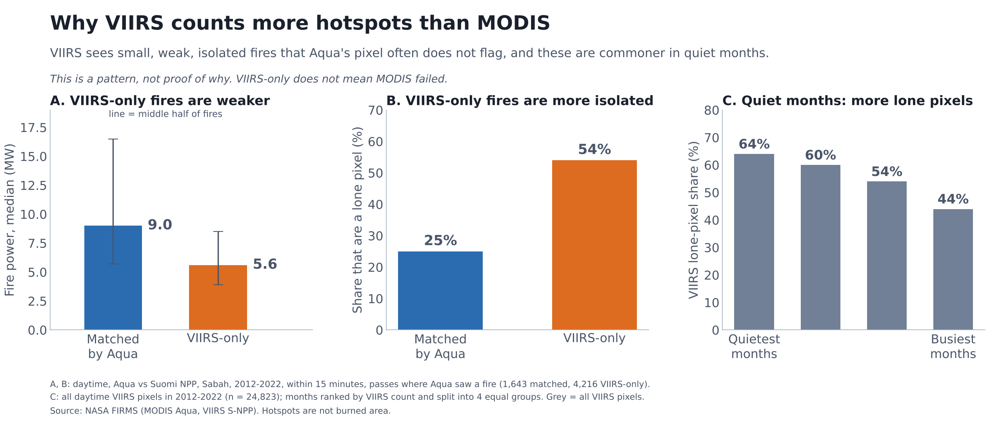

Burning activity calendar
Critical burning windows
In how many years did each calendar month reach High or Very high?
This is history, not a forecast.
Most unusual months
Hotspot counts compared with the usual for that calendar month.
Now vs normal
One month compared with the median of the same calendar month over the previous years (up to 10).
Proof 1: the fake jump at 2012
Raw join uses MODIS counts before February 2012 and VIIRS counts after. VIIRS sees more, so hotspots seem to jump. The harmonized record removes that jump.
Show the numbers as a table (yearly totals)
Proof 2: tested on years the method never saw
We learned the ratio on 2012–2018, then predicted VIIRS for 2019–2025 from MODIS alone.

Hold-out test. Blue: real VIIRS. Orange dashes: MODIS × ratio. Grey dots: MODIS with no fix. Chart made by our notebook from NASA FIRMS data.

How sure are we?
What we tested
- Learn the ratio on Feb 2012 to Dec 2018. Test on 2019 to 2025.
- About 24% total error. Same colour class in 72 of 84 months.
- Five other methods on the same split. None clearly beat the fixed ratio.
What held up
- The fall of about 59% shows in every check we ran.
- MODIS alone shows the same fall. That follows from the arithmetic, so it is not an independent check of the ratio.
What we cannot know
- The ratio before 2012 cannot be tested.
- It would have to be 2.0 for the fall to vanish. The lowest yearly ratio we measured is 4.2.
- The ratio of about 4.95 holds only for our confidence filters and only for Sabah.
| Check | Fall in yearly hotspots |
|---|---|
| Ratio uncertainty only | about −57% to −61% |
| Drop any one year | about −56% to −66% |
| Years treated as a sample (only nine early years) | about −35% to −75% |
Details: robustness/REPORT.md and experiment_b/REPORT.md in the repository.
Results
On test years the method had about 24% total error and agreed on the colour class 86% of the time. Reliable for ranking months and seeing the season. Not for one exact month before 2012.
How it works
- Clean both datasets. Same area, same confidence rule, monthly counts.
- Find the overlap years. Both sensors flew together from 2012.
- Compute the ratio. VIIRS sees about 4.95 times more hotspots than MODIS here.
- Estimate earlier years. MODIS counts before 2012 are multiplied by that ratio.
- Test it. We checked the method on 2019–2025, years it never saw.
Use this for your region
- Get FIRMS data for your own box from NASA FIRMS.
- Find the years where both sensors overlap and compute your own ratio.
- Test it on years you held back before you trust it.
Our notebooks: notebooks/. Method tests: analysis/method_checks.py.
Our ratio of about 4.95 is for Sabah only. Do not reuse it elsewhere.
Limits
- FIRMS lists detections only, so we cannot prove MODIS missed a fire.
- Hotspots are not burned area.
- Before 2012 values are estimates from MODIS.
- The record starts in 2003 because only one MODIS satellite flew before mid-2002.
- Quiet months are less certain: our ratio under-predicts VIIRS there by about 16%.
- Aqua's overpass drifted after 2022 (05:40 to 07:28 UTC).
- The ratio is proven for Sabah only.
- August to October 2026 is provisional near-real-time data.
- This is a planning tool, not live fire response.